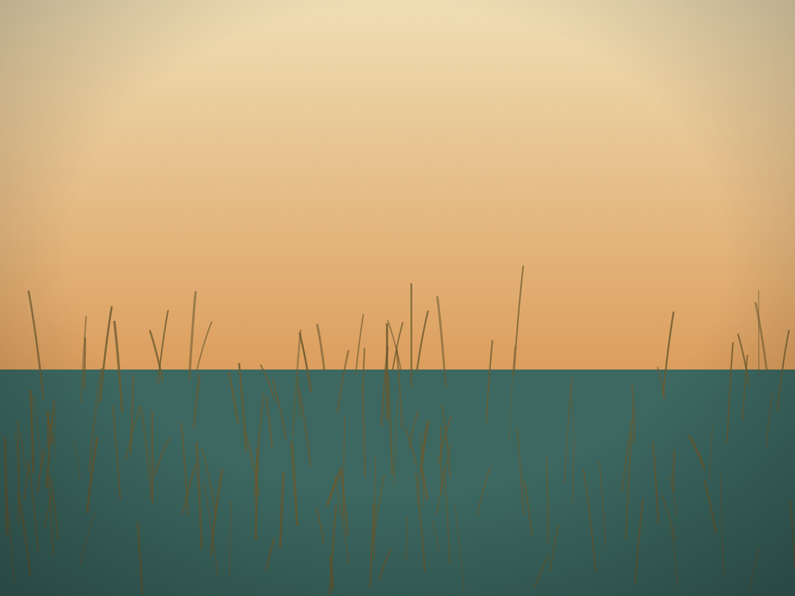

Surf Fishing Delaware
Read the beach. Choose the bait. Know the rules. Fish with confidence.
Your first successful day doesn't require a truckload of gear.
Experienced surf anglers show up with rod racks, coolers, carts and compressors. None of that is required for a good first trip. You need legal access and the right license or permit arrangement, a safe vehicle setup if you're driving onto the beach, one dependable rod-and-reel combination, a simple bottom rig baited with something local fish actually eat, and enough patience to move, re-bait and adjust when the water tells you to.
The beginner's one-rod plan
A 9- to 11-foot medium-heavy surf rod with a 5000- to 6500-size spinning reel, spooled with 20- to 30-pound braid and a 30- to 50-pound leader, covers most Delaware surf situations. Tie on a two-hook high-low rig, add a pyramid sinker heavy enough to hold bottom, and bait with small pieces of bloodworm, Fishbites, squid or cut bait.
Cast just beyond the shore break first — many Delaware surf fish feed in the first trough, closer to shore than beginners expect. If nothing happens after 15–20 minutes and your bait is still there, recast at a different distance or move down the beach.
"What is the water doing right here?" matters more than how far you can cast. Look for darker water, a break in the breaking waves, a small point, or a wash that funnels food — then fish structure first and distance second.
The ocean isn't one uniform stretch of water.
Every Delaware beach hides the same handful of features. Learning to spot them is the single most useful surf-fishing skill there is.
A simple three-cast search pattern: cast one bait to the near trough (20–40 yards), one to the outer edge of the bar or a visible cut, and — if conditions and tackle allow — one beyond the bar. Whichever zone produces bites becomes your focus for the rest of the session.
One solid setup covers most Delaware situations.
For larger predators — bluefish, striped bass, red drum when present — a fish-finder rig (sliding sinker clip, bead, swivel, leader, circle hook) lets a fish move with the bait before feeling the sinker's weight. Use the lightest sinker that still holds bottom; if the line sweeps down-current and the rig rolls, add weight before you add distance. If even a heavy sinker won't hold, the water may simply be too strong there — moving down the beach is often smarter than adding more lead.
When using circle hooks, resist the dramatic hookset. Let the rod load, tighten the line and reel steadily — circle hooks are designed to find the corner of the mouth on their own under tension.
Two baits are usually enough to start.
Bring one durable bait and one high-attraction bait — Fishbites paired with bloodworm, or Fishbites paired with squid. That combination lets you learn whether fish are present without losing every offering to crabs in the first ten minutes.
Bloodworm
Highly effective for kingfish, spot and croaker. Cut small pieces and keep the hook point exposed.
Fishbites / synthetic strip
Durable and clean. Stays on the hook far longer than natural bait — good as a bait-keeper alone or paired with the real thing.
Squid
Affordable and durable. Cut narrow tapered strips that flutter without spinning — good for flounder, croaker and spot.
Cut mullet or bunker
For larger predators like bluefish and striped bass. Fresh generally outperforms repeatedly thawed bait.
Sand fleas
Found right in the wash zone. Keep cool and damp — not submerged in stagnant water.
Shrimp
Broadly effective in small pieces. Avoid oversized chunks that hide the hook point.
What's commonly caught, and how anglers target it.
Northern Kingfish
- Where
- Sandy troughs and gentle cuts
- Bait
- Bloodworm, Fishbites, small clam
- Rig
- Small-hook high-low
Spot & Atlantic Croaker
- Where
- Troughs and bay-influenced beaches
- Bait
- Bloodworm, Fishbites, small squid
- Rig
- High-low rig
Bluefish
- Where
- Cuts, white water, wherever baitfish gather
- Bait
- Cut mullet/bunker, metal lures
- Note
- Use pliers — sharp teeth, even when the fish looks tired
Striped Bass
- Where
- Cuts, points, inlet-adjacent water
- Bait
- Fresh bunker/clam, swimming plugs, bucktails
- Tip
- Dawn, dusk, night and moving water often outperform a bright calm afternoon
Flounder, weakfish, red drum, and full identification notes for skates, rays and protected species are covered in more depth in the premium print edition (below). Never keep anything you can't confidently identify.
Get a starting-point recommendation
Answer five quick questions for a rig, zone and bait pairing to start with. This is a common-pattern suggestion, not a guarantee — the water in front of you always has the final word.
Where are you fishing?
The unwritten rules that keep access open for everyone.
Non-negotiables, every trip.
- Lightning: end the session immediately and get to an enclosed vehicle or building. A beach canopy is not shelter.
- Water: don't wade for extra casting distance. Drop-offs and rip currents can knock down a confident adult, and cold water reduces swimming ability fast.
- Heat and sun: shade, sunscreen and more water than you think you'll need.
- Hooks: keep them covered in transit, look behind you before every cast, and carry cutters sized for the hooks you're using.
- Catch-and-release: wet your hands first, support the fish horizontally, keep it out of the sand, and minimize time out of the water.
- Sharks, skates and rays: identify before handling. When in doubt, treat it as protected and release it promptly.
This is general safety guidance and local practice, not a substitute for posted park instructions or lifeguard direction.
Verify before every trip — this is the one section that changes.
Delaware runs two related but separate systems: a fishing license and FIN number administered by DNREC Fish and Wildlife, and a surf-fishing vehicle permit administered by Delaware State Parks for driving onto designated beaches at Cape Henlopen, Delaware Seashore, Fenwick Island and Beach Plum Island. A vehicle permit does not automatically license every angler riding in that vehicle — other occupants generally need their own license and FIN number.
This guide does not publish current fees, size limits, season dates or possession limits
Those change, sometimes mid-season. Confirm the current rules directly from the official sources below before you keep any fish or drive onto any beach — never rely on a saved screenshot of last year's regulation table.
Before you leave home
- Check current regulations and the DNREC fishing report
- Confirm licenses, FIN numbers and surf permit
- Check reservations, closures and tide times
- Check wind and marine forecast
- Pre-tie rigs and pack bait separately from food
- Test 4WD and check spare tire
- Pack shovel, jack, board, tow rope, tire gauge
- Tell someone your beach and return time
The Delaware Beach Finds Guide to Surf Fishing — Premium Edition
A complete print-and-ebook edition is in development — full species-by-species field notes, a seasonal calendar, beach-driving and recovery instruction, and printable checklists, expanded well beyond this free web guide.
Browse the Delaware Beach Finds ShopRelated Delaware Beach Finds stories

The Towers on the Dunes
The concrete fire-control towers that share Cape Henlopen with some of the state's best surf-fishing beaches.
The Galloping Dune
The stabilized Great Dune, and the park geography that shapes where anglers set up.

Where the Marsh Is Going
The bay-side habitat behind Beach Plum Island's calmer, different kind of surf fishing.
Follow @delawarebeachfinds for real catches and conditions from the coast →